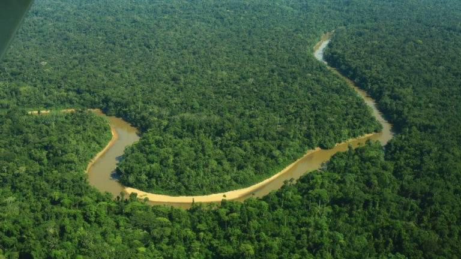
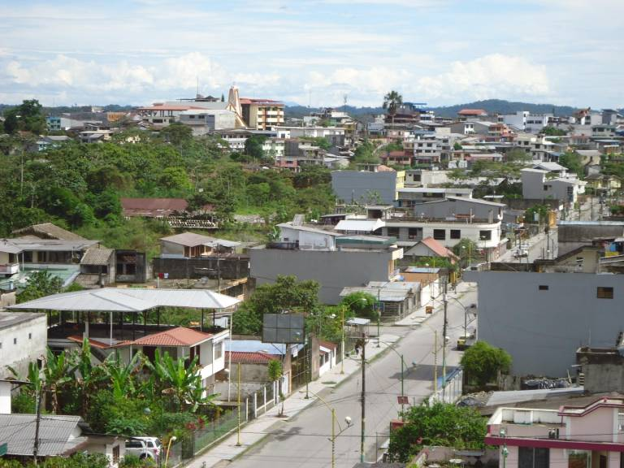

YASUNI

PUYO

RESERVA BIOLOGICA LIMONCOCHA

VOLCAN SUMACO Y PAN DE AZUCAR

RESERVA FUNISTICA CUYABENO

PASTAZA
GRACIAS POR VISITAR ECUADOR
El nombre de Ecuador por tanto procede del hecho de que esta parte del mundo está atravesada por la línea ecuatorial imaginaria que divide al planeta en dos partes iguales llamadas hemisferio norte y hemisferio sur.